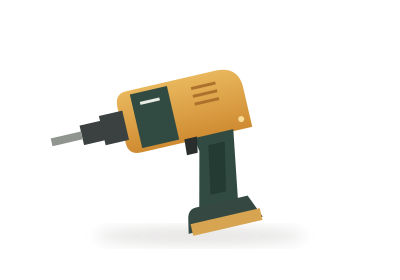
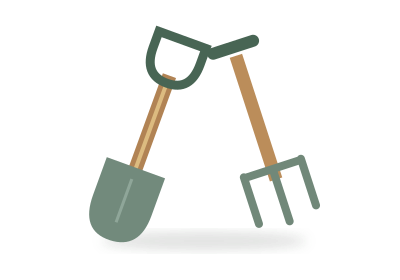
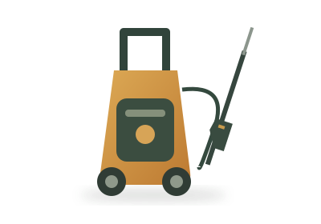
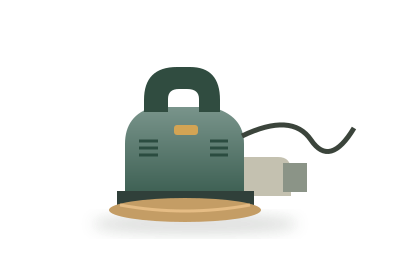
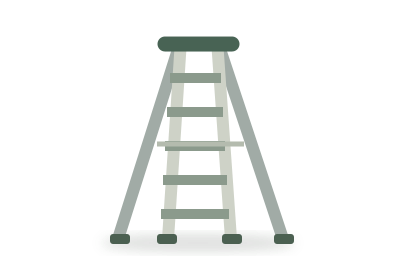
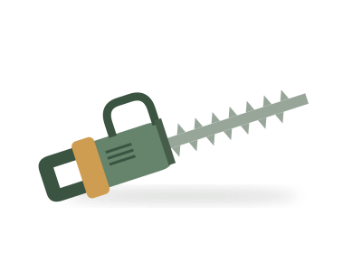
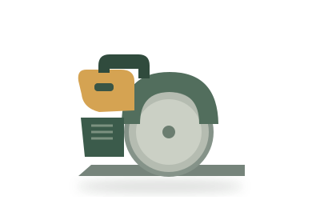

Available to borrowDIY & home repair
Cordless drill
For shelves, flatpacks and fresh ideas.
Jamie · Maple LaneFree to borrow
Something for the garden? A long-overdue little fix? Find the tool that gets you started.

Available to borrowDIY & home repair
For shelves, flatpacks and fresh ideas.

Available to borrow
Available to borrow
Available to borrow
Available to borrow
Out on a projectA bit of everything
The little essentials, all together.

Out on a projectTry a different search or have a look at all the tools.
Sample neighbourhood collection. New listings and borrowing plans stay in this browser.
The best tool libraries start with a little sharing.